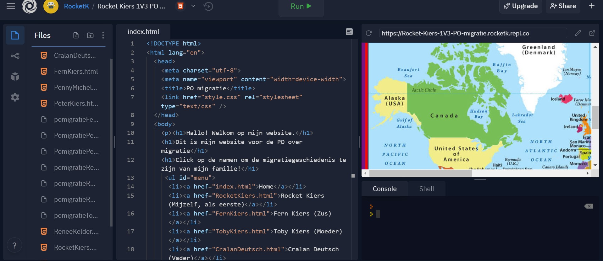

1. Dat mijn opa een bom had overleefd in Wereld oorlog 2.
2. Mijn oma's familie is van Schotland.
3. Mijn moeder woonde in Jamaica toen zij een kind was.
4. Ik heb uitgevonden hoe moeilijk het is om een website te maken (Zoals je hier benenden ziet) 